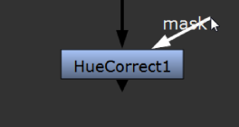
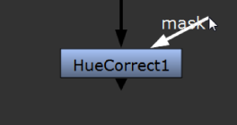
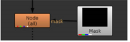
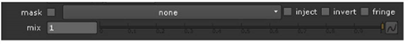

输入连接器。
输入连接器。
的 面具 节点 “属性” 面板中的控件允许您选择单个通道，以便在给定过程中用作遮罩 (通常是颜色校正)。此后给定的过程仅限于选定通道的非黑色区域。
您可以使用脚本的现有通道之一作为遮罩，或者使用遮罩输入连接器将遮罩附加到节点。
您可以在颜色校正和过滤器节点 (如 HueCorrect 和 Blur) 上找到蒙版输入连接器。起初，它们在节点的右侧显示为三角形，但是当你拖动它们时，它们会变成标有标签的箭头 面具 。您以与任何其他连接器相同的方式连接它们。如果看不到屏蔽输入连接器，请打开节点的 “属性” 面板并确保 面具 设置为 没有 .
|
|
 |
|
在拖动蒙版之前
输入连接器。 |
拖动蒙版时
输入连接器。 |
| 1。 | 使用其屏蔽输入连接器将屏蔽连接到节点。 |

如果看不到屏蔽输入连接器，请打开节点的控件并确保 面具 设置为 没有 .

默认情况下，当连接遮罩输入时，节点将其 alpha 通道用作遮罩。

| 2. | 如果你不想使用 alpha 通道，磨砂，选择您要使用的 面具 下拉菜单。 |
| 3. | 如果你想从面具 面具 输入复制到预定义的 面具。 通道，检查 注入 。这样，您可以在下游再次使用最后一个屏蔽输入。您还可以设置要使用的节点流 面具。 作为遮罩，然后通过简单地将新遮罩连接到第一个节点的遮罩输入连接器来更改所有遮罩。 |
| 4. | 如有必要，请检查 反转 用于反转蒙版的框。 |
提示: 的 反转 控制也会影响来自上游节点的任何注入蒙版。
| 5. | 如果节点的整体效果过于苛刻，您可以通过调整 混合 滑块。 |
| 1。 | 确保没有任何东西连接到节点的屏蔽输入连接器。如果断开屏蔽输入，屏蔽输入连接器将消失，因为它不再被使用。 |
| 2. | 从中选择要使用的频道 面具 下拉菜单。 |
| 3. | 如有必要，请检查 反转 用于反转蒙版的框。 |
| 4. | 如果节点的整体效果过于苛刻，您可以通过调整 混合 滑块。 |
|
|